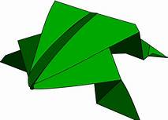

Origami Designs
About Us
Follow Us

Interesting facts about Origami
Origami is a Japanese art.
Origami is made up of 2 Japanese words, ori meaning folded and kami meaning paper.
The most simple origami shape to make is the crane which only requires a few folds but turns out to look amazing.
The UK has a national magazine dedicated to the art of Origami! The magazine started a origami making competion from 1970 and is still going on now!